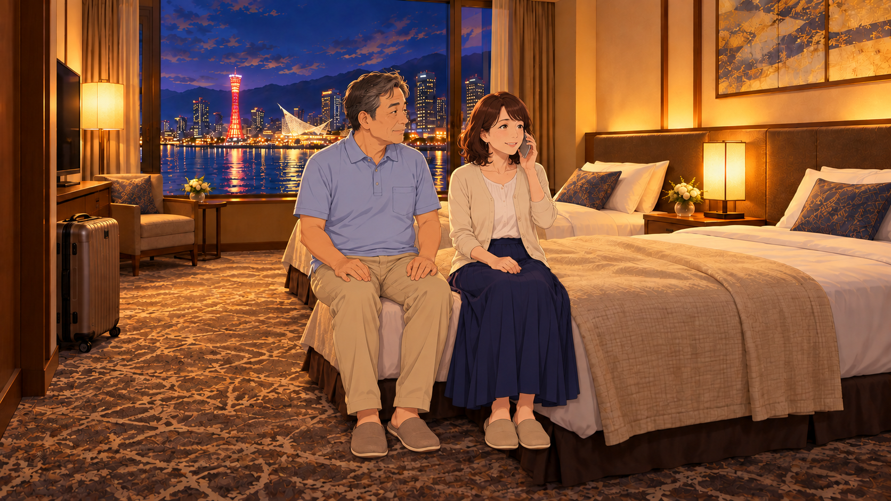
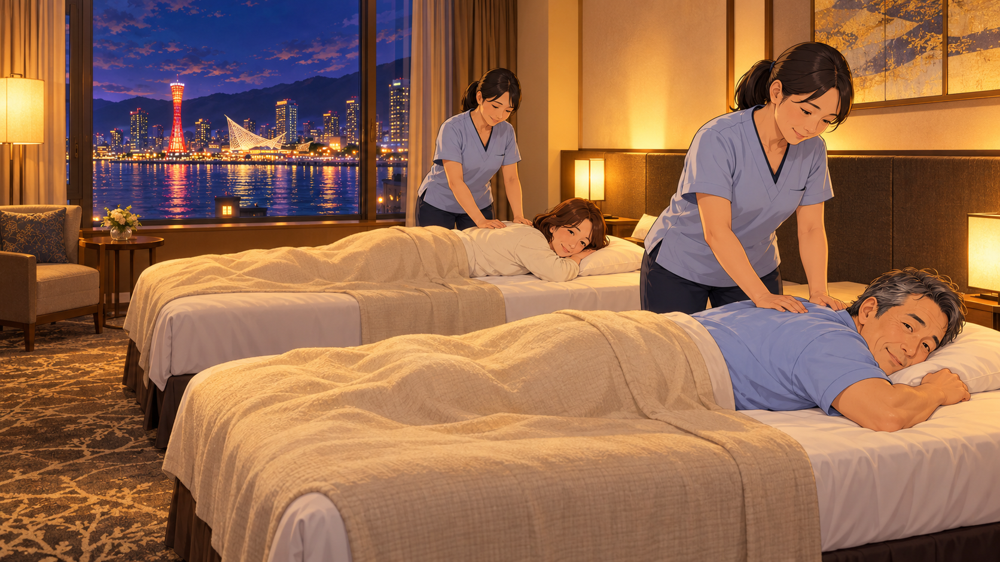

神戸、ふたり旅。
楽しい旅行の途中で疲れに気づき、ホテルで休む。既存モックを活かす、いちばん素直なサービス紹介。
伝わる強み：利用する場面がすぐに伝わる
動画と絵コンテを見る「旅先の疲れ」「旅行前の不安」「娘から両親への贈り物」。
既存の方向性を活かし、物語のつながりと人物の姿勢を見直しました。
各60秒・11カット ／ 全カット画像＋画像上テロップ ／ 音声・BGMなし
画の下に、動作・構図・セリフ・音の案・つながりの注意点を掲載しています。
楽しい旅行の途中で疲れに気づき、ホテルで休む。既存モックを活かす、いちばん素直なサービス紹介。
伝わる強み：利用する場面がすぐに伝わる
動画と絵コンテを見る行きたい。でも、膝や腰が気になる。その迷いから始め、旅先で休める選択肢を伝える。
伝わる強み：冒頭から「自分の悩み」として受け止めやすい
動画と絵コンテを見る「最近、旅行に行かなくなった両親」が気になる娘。旅先で休める時間も添えて、もう一度ふたり旅を提案する。
伝わる強み：本人以外からの紹介と相談につながる
動画と絵コンテを見る更新版：文字のみの画面をなくし、全カットを全画面イラスト＋画像上テロップに統一しました。本編47秒＋求人6秒＋問い合わせ7秒。旧45秒案より、訪問・説明・家族の反応に時間を加えています。図中のカット番号は今回の番号です。修正一覧では旧版の番号を併記しています。
楽しい旅行の途中で疲れに気づき、ホテルで休む。既存モックを活かす、いちばん素直なサービス紹介。

妻「やっぱり、来てよかったね」

夫「さすがに、膝にきたなあ」／妻「私も、腰がね」

妻「ホテルで受けられるんですね。今夜、お願いできますか？」

NA「ホテルのお部屋で、受けられます」

スタッフ「こんばんは。太洋堂です」

NA「太洋堂の訪問マッサージ。お部屋で、ゆっくりおくつろぎください」

妻「寝ちゃった。お金、払っておくね」

妻「昨日、お願いしてよかったね」／夫「ゆっくり休めたな」

NA「旅の時間を、最後まで」

NA「業務委託の、あん摩マッサージ指圧師も募集中です」

NA「治癒院、太洋堂。ご相談は、お電話で」
行きたい。でも、膝や腰が気になる。その迷いから始め、旅先で休める選択肢を伝える。

夫「行きたいけど、また膝がつらくなりそうで…」

妻「ホテルに来てもらえる、マッサージがあるんだって」

NA「ホテルのお部屋で、受けられます」

妻「この景色、見たかったのよね」

妻「今夜、ふたりでお願いできますか？」

スタッフ「こんばんは。太洋堂です」

NA「太洋堂の訪問マッサージ。お部屋で、ゆっくりおくつろぎください」

妻「よく休めたね」／夫「朝の景色も、いいな」

NA「行きたい気持ちを、そのままに」

NA「業務委託の、あん摩マッサージ指圧師も募集中です」

NA「治癒院、太洋堂。ご相談は、お電話で」
「最近、旅行に行かなくなった両親」が気になる娘。旅先で休める時間も添えて、もう一度ふたり旅を提案する。

娘NA「前は、あんなに旅行していたのに」

父「膝がなあ」／母「歩くと腰もつらくてね」

娘NA「お部屋まで来てくれるなら、ゆっくりできそう」

娘「今度、神戸に行かない？ マッサージも、私から」

母「久しぶりね、こうして出かけるの」

スタッフ「こんばんは。太洋堂です」

NA「太洋堂の訪問マッサージ。お部屋で、ゆっくりおくつろぎください」

母のメッセージ「ありがとう。来てよかった」

娘NA「また、ふたりで旅してほしい」

NA「業務委託の、あん摩マッサージ指圧師も募集中です」

NA「治癒院、太洋堂。ご相談は、お電話で」
旧版の絵を見直し、形の問題とカット間のつながりの問題を分けて整理しました。
旧B04では、膝・すね・黒い足先の位置関係が曖昧で、脚が3本あるように見えます。靴を履いたままベッドに乗っている描写も、ホテルでくつろぐ場面として不自然でした。
修正：夫婦ともベッドの端に座り、両足を床につけた構図に変更。夫の左右の膝・すね・足先が1組ずつ読める形にし、室内ではスリッパに統一しました。脚の重なりが分かりにくかった旧A03も同じ基準カットに置き換えています。

旧A04・B05は、手前の夫と奥の妻で頭の向きが逆になり、ベッドの配置やスタッフの立ち位置が理解しにくい画でした。旧C05は夫婦が同方向ですが、A・Bと部屋の配置が異なっていました。
修正：夫は手前、妻は奥。頭は画面右、足は左。両者とも施術中はうつ伏せ。2台のベッドは平行に独立させ、各スタッフが床から施術する配置に統一しています。腰から下は自然なタオルで覆い、手足とベッドの輪郭が混ざらない構図にしました。

会計：旧A05の紙幣と指が重なる細かい描写を、現金入りの封筒の受け渡しへ変更しました。施術後の夫が横向きで寝るのは、施術中から時間が進んだ後の姿勢変更として扱います。
時間帯：訪問シーンを夜景に修正し、20時以降の受付という説明と合わせました。朝は明るい窓や港の景色に切り替えます。
C案の結末：旧版では説明だけだった「写真を受け取った娘の笑顔」を、独立した新C09として追加しました。
残している既存カットには、妻が若く見える場面や、娘の顔の描き込みが新旧で少し異なる箇所があります。夫婦・娘の設定画を固定し、採用案が決まった段階で顔の年齢感を全カット統一するのが適切です。
ホテルの窓・調度品、神戸の建物の位置関係は構成確認用のイメージです。実在ホテルの客室や正確な眺望を示すものではありません。今回の修正は主に手足・施術姿勢・物語のつながりに対応しています。
屋号・連絡先：「治癒院 太洋堂」は既存モックとフォルダ名に合わせた仮表記です。文字起こしには「太陽堂」もあるため正式表記を確認します。電話番号・住所・受付時間・求人条件も最終確認のうえ確定します。
夫婦同時施術：打ち合わせの希望を反映した描写です。実際の訪問可否・対応ホテル・スタッフ2名の手配状況は予約時に確認する前提です。
C案のプレゼント：娘の費用負担の申し出として描いています。ギフト券の販売、オンライン予約、事前決済があるとは表現していません。代理相談や支払い方法は確認が必要です。
翌朝の描写：笑顔やよく休めた感想で変化を見せます。症状の治癒・改善を約束するコピーは入れていません。施術はマッサージのみです。
音声：今回のMP4は字幕付き・無音です。絵コンテ内の音の記述は本制作向けの設計案です。静止画は動作の代表瞬間で、細かな動きは本文に記載しています。
公式HP・QR：遷移先が未確定のため、今回の動画にはQRコードを入れていません。